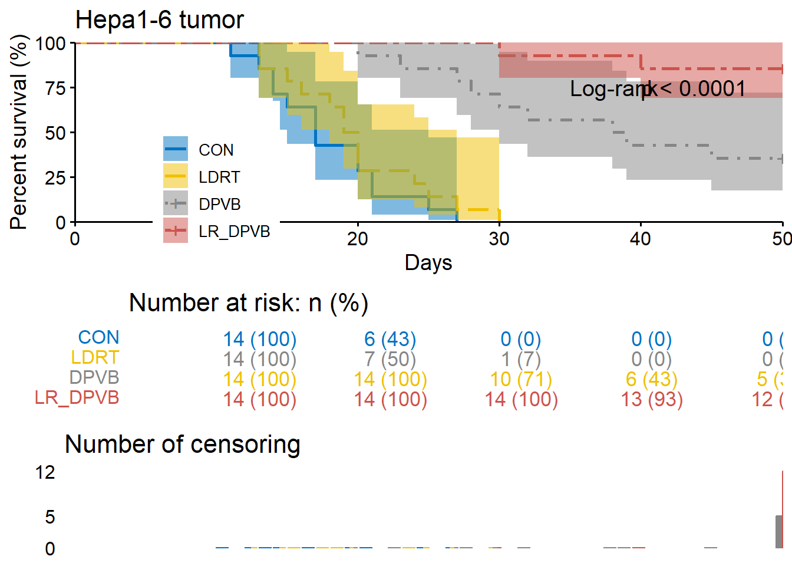
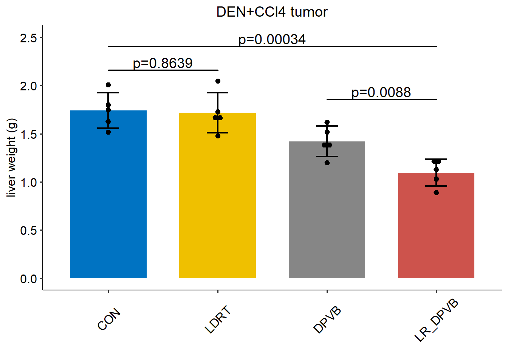
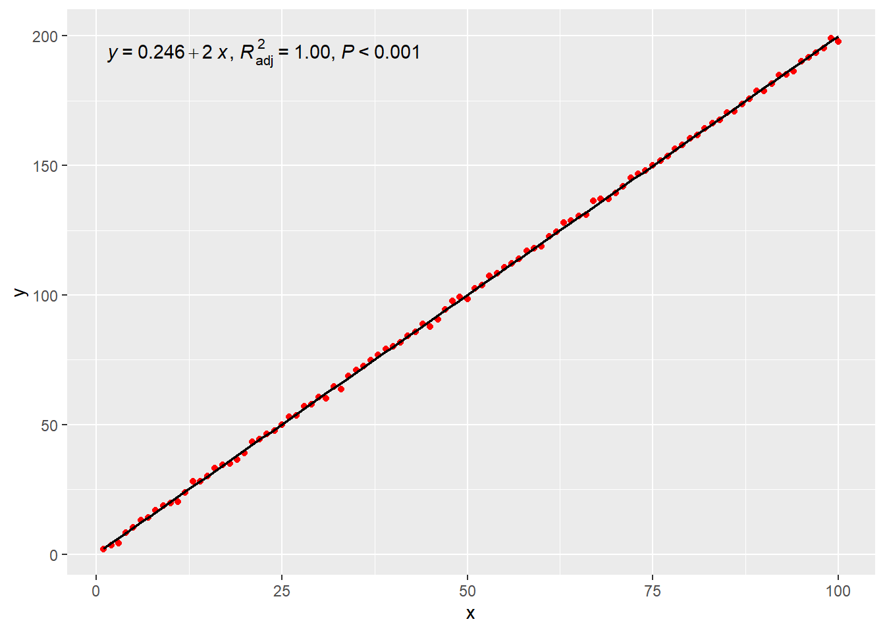

01
Low-dose radiotherapy combined with dual PD-L1 and VEGFA blockade elicits antitumor response in hepatocellular carcinoma mediated by activated intratumoral CD8 exhausted-like T cells+
https://www.nature.com/articles/s41467-023-43462-1
1 waterfall barplot：Fig.1 c
Code
c <- read_excel("data/01source.xlsx",sheet=1,range = "A2:D16") |>
rename(
LR_DPVB=`LR-DPVB`
) |>
pivot_longer(
cols = CON:LR_DPVB,
names_to = "treatment",
values_to = "changerate"
) |>
mutate(
treatment=factor(treatment,levels=c('CON','LDRT','DPVB','LR_DPVB')),
changerate=if_else(changerate>=1,100,changerate*100)
) |>
arrange(treatment)|>
drop_na() |>
mutate(
id=1:52
) Code
ggplot( c ,aes(x=id,y=changerate,fill=treatment))+
geom_bar(stat = "identity",position = "dodge",width =0.8)+
# scale_fill_lancet()+
# scale_fill_nejm()+
# scale_fill_jama()+
scale_fill_jco()+
scale_y_continuous(name = "MRI tumor volume change from baseline (%)",
limits = c(-100,100),
breaks = seq(-100,100,50),
)+
theme_pubr()+
theme(
legend.position = c(0.8,0.8),
legend.title = element_blank(),
axis.title.x = element_blank(),
axis.text.x = element_blank(),
axis.ticks.x = element_blank(),
axis.line.x = element_blank(),
plot.title = element_text(hjust = 0.5),
)+
ggtitle("Hepa1-6 tumor")+
geom_hline(yintercept = 0,color = "black",linetype =1,linewidth=0.8)+
geom_hline(yintercept=c(20,-30), colour="gray15", linetype=3,linewidth=0.8)+ # 0 = blank, 1 = solid, 2 = dashed, 3 = dotted,
# 4 = dotdash, 5 = longdash, 6 = twodash
annotate(geom = "text",x=c(2,50),y=c(-30,20),
label = c("PR:-30%","PD:20%"),
vjust = -0.5,
)
#> Warning: A numeric `legend.position` argument in `theme()` was deprecated in ggplot2
#> 3.5.0.
#> ℹ Please use the `legend.position.inside` argument of `theme()` instead.
2 生存曲线 Kaplan-Meier curve：Fig.1 d、n
Code
### 数据 三列 “group”分组列， “time”生存时间列，“status”事件状态列
d<-read_excel("data/01source.xlsx",sheet=1,range = "A19:E75") |>
rename(
LR_DPVB=`LR-DPVB`
) |>
pivot_longer(
cols = CON:LR_DPVB,
names_to = "treatment",
values_to = "status"
) |> drop_na() |>
mutate(
treatment=factor(treatment,levels=c('CON','LDRT','DPVB','LR_DPVB'))
)
# 加载包
library(survival)
# 使用 Kaplan-Meier 方法拟合生存曲线
km_fit<-survfit(Surv(Days,status)~treatment,data=d)
summary(km_fit,data=d)
#> Call: survfit(formula = Surv(Days, status) ~ treatment, data = d)
#>
#> treatment=CON
#> time n.risk n.event survival std.err lower 95% CI upper 95% CI
#> 11 14 1 0.9286 0.0688 0.8030 1.000
#> 13 13 1 0.8571 0.0935 0.6921 1.000
#> 14 12 2 0.7143 0.1207 0.5129 0.995
#> 15 10 1 0.6429 0.1281 0.4351 0.950
#> 17 9 3 0.4286 0.1323 0.2341 0.785
#> 20 6 2 0.2857 0.1207 0.1248 0.654
#> 21 4 2 0.1429 0.0935 0.0396 0.515
#> 25 2 1 0.0714 0.0688 0.0108 0.472
#> 27 1 1 0.0000 NaN NA NA
#>
#> treatment=LDRT
#> time n.risk n.event survival std.err lower 95% CI upper 95% CI
#> 13 14 2 0.8571 0.0935 0.6921 1.000
#> 15 12 1 0.7857 0.1097 0.5977 1.000
#> 16 11 1 0.7143 0.1207 0.5129 0.995
#> 18 10 1 0.6429 0.1281 0.4351 0.950
#> 19 9 2 0.5000 0.1336 0.2961 0.844
#> 20 7 3 0.2857 0.1207 0.1248 0.654
#> 24 4 1 0.2143 0.1097 0.0786 0.584
#> 25 3 1 0.1429 0.0935 0.0396 0.515
#> 27 2 1 0.0714 0.0688 0.0108 0.472
#> 30 1 1 0.0000 NaN NA NA
#>
#> treatment=DPVB
#> time n.risk n.event survival std.err lower 95% CI upper 95% CI
#> 20 14 1 0.929 0.0688 0.803 1.000
#> 23 13 1 0.857 0.0935 0.692 1.000
#> 27 12 1 0.786 0.1097 0.598 1.000
#> 28 11 1 0.714 0.1207 0.513 0.995
#> 30 10 1 0.643 0.1281 0.435 0.950
#> 32 9 1 0.571 0.1323 0.363 0.899
#> 38 8 1 0.500 0.1336 0.296 0.844
#> 39 7 1 0.429 0.1323 0.234 0.785
#> 45 6 1 0.357 0.1281 0.177 0.721
#>
#> treatment=LR_DPVB
#> time n.risk n.event survival std.err lower 95% CI upper 95% CI
#> 30 14 1 0.929 0.0688 0.803 1
#> 40 13 1 0.857 0.0935 0.692 1Code
# 使用 ggplot2 和 survminer 绘制生存曲线图
library(survminer)
ggsurvplot(
fit = km_fit,
data = d,
fun = "pct", #event',累计死亡比列，'cumhaz':cumulative hazard累计风险
palette = "jco",
linetype = c(1,5,4,6),
surv.median.line = 'none',
conf.int = TRUE,
conf.int.alpha=0.5,
pval = TRUE,# "log rank p=0.0053"
log.rank.weights='1',
pval.method = TRUE,
pval.coord=c(40,75),
pval.method.coord=c(35,75),
risk.table = "abs_pct", # "nrisk_cumcensor" and "nrisk_cumevents"
risk.table.col = "treatment",
tables.theme = theme_cleantable(),
ncensor.plot=T,
axes.offset=F, #(0,0)pos
title = "Hepa1-6 tumor",
xlab="Days",
ylab="Percent survival (%)",
legend.title = "",
legend = c(0.2,0.25),
legend.labs=c('CON','LDRT','DPVB','LR_DPVB'),
ggtheme = theme_survminer(),
)
3 条形图+ errorbar + significance + dotplot：Fig.1 g、h、j、p
Code
g<-read_excel("data/01source.xlsx",sheet=1,range="G2:Z3")
#> New names:
#> • `` -> `...2`
#> • `` -> `...3`
#> • `` -> `...4`
#> • `` -> `...5`
#> • `` -> `...7`
#> • `` -> `...8`
#> • `` -> `...9`
#> • `` -> `...10`
#> • `` -> `...12`
#> • `` -> `...13`
#> • `` -> `...14`
#> • `` -> `...15`
#> • `` -> `...17`
#> • `` -> `...18`
#> • `` -> `...19`
#> • `` -> `...20`
colnames(g) <- rep(c('CON','LDRT','DPVB','LR_DPVB'),each=5)
g<- g |> pivot_longer(
cols = everything(),
names_to = "treatment",
values_to = "liverweight"
)|>
mutate(
treatment=factor(treatment,levels=c('CON','LDRT','DPVB','LR_DPVB'))
)
g
#> # A tibble: 20 × 2
#> treatment liverweight
#> <fct> <dbl>
#> 1 CON 1.75
#> 2 CON 1.8
#> 3 CON 2.01
#> 4 CON 1.52
#> 5 CON 1.63
#> 6 LDRT 1.73
#> 7 LDRT 2.05
#> 8 LDRT 1.48
#> 9 LDRT 1.66
#> 10 LDRT 1.68
#> 11 DPVB 1.2
#> 12 DPVB 1.38
#> 13 DPVB 1.52
#> 14 DPVB 1.62
#> 15 DPVB 1.39
#> 16 LR_DPVB 1.2
#> 17 LR_DPVB 1.23
#> 18 LR_DPVB 1.13
#> 19 LR_DPVB 1.03
#> 20 LR_DPVB 0.89Code
source("function/calculate_t_tests.R")
calculate_t_tests(g,"treatment","liverweight")
#> CON LDRT DPVB LR_DPVB
#> CON NA NA NA NA
#> LDRT 0.8639404014 NA NA NA
#> DPVB 0.0193695457 0.0359059495 NA NA
#> LR_DPVB 0.0003376202 0.0008265681 0.008820249 NA
Note
函数calculate_t_tests
Code
# 定义计算两两组之间t检验的函数
calculate_t_tests <- function(data, group_by, value_column) {
# data: 数据框
# group_by: 组别的列名
# value_column: 要比较的数值的列名
# 提取唯一的组别
groups <- unique(data[[group_by]])
# 初始化结果矩阵
result_matrix <- matrix(NA, nrow = length(groups), ncol = length(groups),
dimnames = list(groups, groups))
# 循环遍历所有可能的组合
for (i in 1:(length(groups)-1)) {
for (j in (i+1):length(groups)) {
# 提取两组数据
group1_data <- data[data[[group_by]] == groups[i], value_column]
group2_data <- data[data[[group_by]] == groups[j], value_column]
# 执行t检验
t_test_result <- t.test(group1_data, group2_data)
# 提取p值
p_value <- t_test_result$p.value
# 将p值存入结果矩阵
#result_matrix[groups[i], groups[j]] <- p_value
result_matrix[groups[j], groups[i]] <- p_value
}
}
# 返回结果矩阵
return(result_matrix)
}3.1 1
Code
library(ggpubr)
ggbarplot(data = g,
x="treatment",y="liverweight",
add = c("mean_sd"),
fill = "treatment",
palette = "jco",
title = "DEN+CCl4 tumor",
xlab = "",
ylab='liver weight (g)',
legend='none',
)+
stat_compare_means(
#aes(label='p.format'),
comparisons = list(c('CON','LDRT'),c("DPVB",'LR_DPVB'), c("CON","LR_DPVB")),
method = 't.test',
tip.length = c(0,0,0,0,0,0),
bracket.size = 1,linewidth=1)+
theme(plot.title = element_text(hjust = 0.5),
axis.text.x = element_text(angle = 45,vjust = 0.5))+
geom_dotplot(data = g,
mapping=aes(x=treatment,y=liverweight),
binaxis = 'y',stackdir = 'center',binwidth = 0.05)
3.2 2
Code
library(ggsignif)
g |>
summarise(
n=n(),
mean=mean(liverweight),
sd=sd(liverweight),
.by=treatment
) |>
ggplot(aes(treatment,mean,fill=treatment))+
geom_bar(stat = "identity",width = .7,position = position_dodge())+#条形图
geom_errorbar(aes(ymin=mean-sd,ymax=mean+sd),
width=.2,color="black",linewidth=.8)+#误差棒
geom_signif(data = g,
mapping=aes(x=treatment,y=liverweight),
comparisons = list(c('CON','LDRT'),c("DPVB",'LR_DPVB'),
c("CON","LR_DPVB")),
annotations = c("p=0.8639","p=0.0088","p=0.00034"),
map_signif_level=F,
tip_length=c(0.0,0.0,0.0,0.0,0.0,0.0),
y_position=c(2.1,1.8,2.35),size = .8,
textsize = 5,
test = "t.test"
)+
theme_pubr()+
scale_fill_jco()+
scale_y_continuous(limits = c(0,2.5))+
labs(
x='',
y='liver weight (g)',
title="DEN+CCl4 tumor"
)+
theme(
plot.title = element_text(hjust =0.5 ),
legend.position = 'none',
axis.text.x = element_text(angle = 45,vjust = .5)
)+
geom_dotplot(data = g,
mapping=aes(x=treatment,y=liverweight),
binaxis = 'y',
stackdir = 'center',#居中
fill='black',
binwidth = 0.05)
#> Warning in geom_signif(data = g, mapping = aes(x = treatment, y = liverweight),
#> : You have set data and mapping, are you sure that manual = FALSE is correct?
3.3 3
Code
ggplot(g,aes(x=treatment,y=liverweight))+
geom_bar(aes(fill=treatment),
stat = 'summary',fun=mean,
position = position_dodge(),width = .7) +
stat_summary(fun.data = 'mean_sd',geom="errorbar",width=.2,linewidth=1) +
geom_signif(comparisons = list(c('CON','LDRT'),c("DPVB",'LR_DPVB'),
c("CON","LR_DPVB")),
map_signif_level=F,
tip_length=c(0,0,0,0,0,0),
y_position=c(2.1,1.8,2.35),size = 0.8,
test = "t.test",textsize = 5,
)+
geom_dotplot(data = g,
mapping=aes(x=treatment,y=liverweight),
binaxis = 'y',
stackdir = 'center',#居中
fill='black',
binwidth = 0.05)+
theme_pubr()+
scale_fill_jco()+
scale_y_continuous(limits = c(0,2.5))+
labs(
x='',
y='liver weight (g)',
title="DEN+CCl4 tumor"
)+
theme(
plot.title = element_text(hjust =0.5 ),
legend.position = 'none',
axis.text.x = element_text(angle = 45,vjust = .5)
)
3.4 4 分组并列，组内显著性p值
https://www.datanovia.com/en/blog/tag/ggpubr/
Code
f2e <- read_excel("data/01source.xlsx", sheet = 3, range = "A2:M4")
#> New names:
#> • `` -> `...3`
#> • `` -> `...4`
#> • `` -> `...6`
#> • `` -> `...7`
#> • `` -> `...9`
#> • `` -> `...10`
#> • `` -> `...12`
#> • `` -> `...13`
colnames(f2e) <-
c("type", rep(c('CON', 'LDRT', 'DPVB', 'LR_DPVB'), each = 3))
f2e |> pivot_longer(cols = -1,
names_to = "trt",
values_to = "pct",
) |>
mutate(trt = factor(trt, levels = c('CON', 'LDRT', 'DPVB', 'LR_DPVB'))) -> f2eCode
library(ggpubr)
library(rstatix)
stat.test <- f2e %>%
group_by(type) %>%
t_test(pct ~ trt) |>
adjust_pvalue(method = "bonferroni") %>%
add_significance("p.adj") |>
add_significance("p")
stat.test <- stat.test %>%
add_xy_position(fun = "mean_sd", x = "type", dodge = 1)|>
dplyr::filter(group1=="CON"&group2=="LR_DPVB")
e_left <- ggbarplot(f2e, x = "type", y = "pct",
fill = "trt", palette = "jco",
add =c("mean_sd"), add.params = list(group = "trt"),
position = position_dodge(1),
#legend="none",
legend.title="",
)+
scale_y_continuous(limits = c(0,80))+
stat_pvalue_manual(
data = stat.test,
label = "p={p}({p.signif})",
tip.length = 0.05,
y.position = c(40,75),
#bracket.nudge.y = -2,
)+labs(
x='',
y='% in live CD45+ cell',
#title="Hepa1-6 tumor"
)
e_right <- e_left
(e_left + e_right)+
plot_annotation(
title = "Hepa1-6 tumor",
) +
plot_layout(guides = "collect")&
theme(
plot.title = element_text(hjust = 0.5),
legend.position = "top",
)
Code
ggplot(mpg, aes(x = drv, y = hwy, fill = as.factor(cyl))) +
geom_bar(stat = "summary",fun=mean, position = position_dodge(1)) +
stat_summary(fun.data = 'mean_sd',geom="errorbar",position = position_dodge(1),
width=.2,linewidth=1)+
geom_point(position = position_dodge(1),
size = 3,alpha=0.3
) 
3.5 5 分组并列，组内组间显著性p值
Code
library(ggpubr)
library(rstatix)
df <- ToothGrowth
df$dose <- as.factor(df$dose)
bp <- ggbarplot(
df,
x = "dose",
y = "len",
add = "mean_sd",
color = "supp",
palette = c("#00AFBB", "#E7B800"),
position = position_dodge(0.8)
)
# 统计检验
stat.test <- df %>%
group_by(dose) %>%
t_test(len ~ supp) %>%
adjust_pvalue(method = "bonferroni") %>%
add_significance("p.adj")
stat.test <- stat.test %>%
add_xy_position(fun = "mean_sd", x = "dose", dodge = 0.8)
stat.test2 <- df %>%
t_test(len ~ dose, p.adjust.method = "bonferroni")
stat.test2 <- stat.test2 %>%
add_xy_position(x = "dose")
pwc <- df %>%
group_by(supp) %>%
t_test(len ~ dose, p.adjust.method = "bonferroni")
pwc
#> # A tibble: 6 × 11
#> supp .y. group1 group2 n1 n2 statistic df p p.adj
#> * <fct> <chr> <chr> <chr> <int> <int> <dbl> <dbl> <dbl> <dbl>
#> 1 OJ len 0.5 1 10 10 -5.05 17.7 0.0000878 0.000263
#> 2 OJ len 0.5 2 10 10 -7.82 14.7 0.00000132 0.00000396
#> 3 OJ len 1 2 10 10 -2.25 15.8 0.039 0.118
#> 4 VC len 0.5 1 10 10 -7.46 17.9 0.000000681 0.00000204
#> 5 VC len 0.5 2 10 10 -10.4 14.3 0.0000000468 0.00000014
#> 6 VC len 1 2 10 10 -5.47 13.6 0.0000916 0.000275
#> # ℹ 1 more variable: p.adj.signif <chr>
pwc <- pwc %>%
add_xy_position(
x = "dose",
fun = "mean_sd",
group = "supp",
dodge = 0.8
)
# 组间组内复合
bp +
stat_pvalue_manual(stat.test, label = "p.adj.signif", tip.length = 0.01) +
stat_pvalue_manual(
stat.test2,
label = "p",
tip.length = 0.02,
step.increase = 0.05
) +
scale_y_continuous(expand = expansion(mult = c(0.05, 0.1))) +
stat_pvalue_manual(
pwc,
color = "supp",
step.group.by = "supp",
tip.length = 0,
step.increase = 0.1
)
4 折线图：fig4 h
4.1 1
Code
f4h <-
read_excel("data/01source.xlsx", sheet = "Fig.4", range = "A20:P23")
#> New names:
#> • `` -> `...3`
#> • `` -> `...4`
#> • `` -> `...5`
#> • `` -> `...6`
#> • `` -> `...8`
#> • `` -> `...9`
#> • `` -> `...10`
#> • `` -> `...11`
#> • `` -> `...13`
#> • `` -> `...14`
#> • `` -> `...15`
#> • `` -> `...16`
colnames(f4h) <-
c("Days", rep(
c("PBS", "SLAMF6+ PD-1+ CD8+ cells", "SLAMF6- PD-1+ CD8+ cells"),
each = 5
))
f4h |> pivot_longer(cols = -1,
names_to = "method",
values_to = "volume",
) |>
dplyr::mutate(Days = factor(Days, levels = c("-1", "7", "14")),
method = factor(
method,
levels = c("PBS", "SLAMF6+ PD-1+ CD8+ cells",
"SLAMF6- PD-1+ CD8+ cells")
)) -> f4h
f4h
#> # A tibble: 45 × 3
#> Days method volume
#> <fct> <fct> <dbl>
#> 1 -1 PBS 19.2
#> 2 -1 PBS 27.0
#> 3 -1 PBS 23.4
#> 4 -1 PBS 27.9
#> 5 -1 PBS 29.7
#> 6 -1 SLAMF6+ PD-1+ CD8+ cells 31.9
#> 7 -1 SLAMF6+ PD-1+ CD8+ cells 34.5
#> 8 -1 SLAMF6+ PD-1+ CD8+ cells 44.4
#> 9 -1 SLAMF6+ PD-1+ CD8+ cells 29.1
#> 10 -1 SLAMF6+ PD-1+ CD8+ cells 41.4
#> # ℹ 35 more rowsCode
stat <- aov(volume ~ method, data = f4h)
summary(stat)
#> Df Sum Sq Mean Sq F value Pr(>F)
#> method 2 3572 1786.0 9.147 0.000504 ***
#> Residuals 42 8201 195.3
#> ---
#> Signif. codes: 0 '***' 0.001 '**' 0.01 '*' 0.05 '.' 0.1 ' ' 1
compare_aov <- TukeyHSD(stat)
compare_aov
#> Tukey multiple comparisons of means
#> 95% family-wise confidence level
#>
#> Fit: aov(formula = volume ~ method, data = f4h)
#>
#> $method
#> diff lwr
#> SLAMF6+ PD-1+ CD8+ cells-PBS -20.306556 -32.703019
#> SLAMF6- PD-1+ CD8+ cells-PBS -3.229738 -15.626201
#> SLAMF6- PD-1+ CD8+ cells-SLAMF6+ PD-1+ CD8+ cells 17.076818 4.680355
#> upr p adj
#> SLAMF6+ PD-1+ CD8+ cells-PBS -7.910092 0.0007680
#> SLAMF6- PD-1+ CD8+ cells-PBS 9.166725 0.8028815
#> SLAMF6- PD-1+ CD8+ cells-SLAMF6+ PD-1+ CD8+ cells 29.473281 0.0048309
pvalue <- compare_aov[["method"]] |> as.data.frame()
pvalue$vs <- rownames(pvalue)
pvalue <- tibble(
vs = pvalue$vs,
padj = format(pvalue$`p adj`, scientific = TRUE, digits = 4),
padj_4 = round(pvalue$`p adj`, digits = 4),
)
pvalue
#> # A tibble: 3 × 3
#> vs padj padj_4
#> <chr> <chr> <dbl>
#> 1 SLAMF6+ PD-1+ CD8+ cells-PBS 7.680e-04 0.0008
#> 2 SLAMF6- PD-1+ CD8+ cells-PBS 8.029e-01 0.803
#> 3 SLAMF6- PD-1+ CD8+ cells-SLAMF6+ PD-1+ CD8+ cells 4.831e-03 0.0048
p <- f4h |> summarise(
mean_volume = mean(volume),
sd = sd(volume),
.by = c(Days, method)
) |>
ggplot(aes(
x = Days,
y = mean_volume,
color = method,
group = method
)) +
geom_errorbar(
aes(ymin = mean_volume - sd, ymax = mean_volume + sd),
position = position_dodge(0),
width = .2,
linewidth = 0.5,
) +
geom_line(position = position_dodge(0),
linewidth = 0.8) +
geom_point(
aes(shape = method),
position = position_dodge(0),
color = "black",
size = 2
) +
theme_pubr() +
theme(legend.title = element_blank())
# 使用ggplot_build()获取图层数据
plot_data <- ggplot_build(p)
# 查看X轴的数值坐标
plot_data$data
#> [[1]]
#> colour ymin ymax x y group PANEL flipped_aes xmin
#> 1 #F8766D 21.2341315 29.640231 1 25.437181 1 1 FALSE 0.9666667
#> 2 #00BA38 29.8251093 42.689121 1 36.257115 2 1 FALSE 0.9666667
#> 3 #619CFF 23.2386460 36.902540 1 30.070593 3 1 FALSE 0.9666667
#> 4 #F8766D 20.3358912 49.648564 2 34.992228 1 1 FALSE 1.9666667
#> 5 #00BA38 4.8856152 11.577581 2 8.231598 2 1 FALSE 1.9666667
#> 6 #619CFF 22.3836755 39.057109 2 30.720392 3 1 FALSE 1.9666667
#> 7 #F8766D 28.7160676 66.995581 3 47.855824 1 1 FALSE 2.9666667
#> 8 #00BA38 0.5880804 5.165626 3 2.876853 2 1 FALSE 2.9666667
#> 9 #619CFF 27.2406302 48.369439 3 37.805035 3 1 FALSE 2.9666667
#> xmax linewidth linetype width alpha
#> 1 1.033333 0.5 1 0.2 NA
#> 2 1.033333 0.5 1 0.2 NA
#> 3 1.033333 0.5 1 0.2 NA
#> 4 2.033333 0.5 1 0.2 NA
#> 5 2.033333 0.5 1 0.2 NA
#> 6 2.033333 0.5 1 0.2 NA
#> 7 3.033333 0.5 1 0.2 NA
#> 8 3.033333 0.5 1 0.2 NA
#> 9 3.033333 0.5 1 0.2 NA
#>
#> [[2]]
#> colour x y group PANEL flipped_aes xmin xmax ymax linewidth
#> 1 #F8766D 1 25.437181 1 1 FALSE 1 1 25.437181 0.8
#> 2 #F8766D 2 34.992228 1 1 FALSE 2 2 34.992228 0.8
#> 3 #F8766D 3 47.855824 1 1 FALSE 3 3 47.855824 0.8
#> 4 #00BA38 1 36.257115 2 1 FALSE 1 1 36.257115 0.8
#> 5 #00BA38 2 8.231598 2 1 FALSE 2 2 8.231598 0.8
#> 6 #00BA38 3 2.876853 2 1 FALSE 3 3 2.876853 0.8
#> 7 #619CFF 1 30.070593 3 1 FALSE 1 1 30.070593 0.8
#> 8 #619CFF 2 30.720392 3 1 FALSE 2 2 30.720392 0.8
#> 9 #619CFF 3 37.805035 3 1 FALSE 3 3 37.805035 0.8
#> linetype alpha
#> 1 1 NA
#> 2 1 NA
#> 3 1 NA
#> 4 1 NA
#> 5 1 NA
#> 6 1 NA
#> 7 1 NA
#> 8 1 NA
#> 9 1 NA
#>
#> [[3]]
#> shape x y group PANEL xmin xmax ymax colour size fill alpha
#> 1 16 1 25.437181 1 1 1 1 25.437181 black 2 NA NA
#> 2 17 1 36.257115 2 1 1 1 36.257115 black 2 NA NA
#> 3 15 1 30.070593 3 1 1 1 30.070593 black 2 NA NA
#> 4 16 2 34.992228 1 1 2 2 34.992228 black 2 NA NA
#> 5 17 2 8.231598 2 1 2 2 8.231598 black 2 NA NA
#> 6 15 2 30.720392 3 1 2 2 30.720392 black 2 NA NA
#> 7 16 3 47.855824 1 1 3 3 47.855824 black 2 NA NA
#> 8 17 3 2.876853 2 1 3 3 2.876853 black 2 NA NA
#> 9 15 3 37.805035 3 1 3 3 37.805035 black 2 NA NA
#> stroke
#> 1 0.5
#> 2 0.5
#> 3 0.5
#> 4 0.5
#> 5 0.5
#> 6 0.5
#> 7 0.5
#> 8 0.5
#> 9 0.5
p + annotate(geom = "segment",
x = 3.4,
y = 47.855824,
yend = 2.876853,) + annotate(
geom = "text",
x = 3.45,
y = (47.855824 + 2.876853) / 2,
angle = 270,
label = pvalue$padj[1],
) +
annotate(geom = "segment",
x = 3.15,
y = 47.855824,
yend = 37.805035,) + annotate(
geom = "text",
x = 3.2,
y = (47.855824 + 37.805035) / 2,
angle = 270,
label = pvalue$padj[2],
) +
annotate(geom = "segment",
x = 3.3,
y = 2.876853,
yend = 37.805035,) + annotate(
geom = "text",
x = 3.35,
y = (2.876853 + 37.805035) / 2,
angle = 270,
label = pvalue$padj[3],
)
Code
#y=c(47.855824,37.805035,2.876853,),
#yend = c(2.876853,47.855824,37.805035,),4.2 2
Code

Code
# Add p-values onto the line plots
# Remove brackets using linetype = "blank"
stat.test <- stat.test %>%
add_xy_position(fun = "mean_sd", x = "dose")
lp + stat_pvalue_manual(stat.test,
label = "p.adj.signif",
tip.length = 0,
linetype = "blank")
5 拟合曲线R2 ,p值：f6c
Code
# 示例数据
df <- data.frame(
x = 1:100,
y = rnorm(100) + 2 * (1:100) # 生成具有线性关系的x和y数据
)
# 创建基本的ggplot对象
p <- ggplot(df, aes(x = x, y = y))+
geom_point(color='red')+
geom_smooth(method = "lm",formula = "y~x",color="black",linewidth=.8)
# 使用stat_poly_eq()添加线性回归方程、R²和p值
p + ggpmisc::stat_poly_eq(formula = y ~ x,
ggpmisc::use_label(c("eq", "adj.R2", "P")))
#> Registered S3 methods overwritten by 'ggpp':
#> method from
#> heightDetails.titleGrob ggplot2
#> widthDetails.titleGrob ggplot2
#> Registered S3 method overwritten by 'ggpmisc':
#> method from
#> as.character.polynomial polynom
6 点图
Code
f6d <-
read_excel("data/01source.xlsx", sheet = "Fig.6", range = "D2:E18")
f6d |> pivot_longer(
cols = everything(),
names_to = "status",
values_to = "Ratio",
) |>
tidyr::drop_na() ->f6d
ggdotplot(f6d,
x="status",
y="Ratio",
add =c("mean_sd"),
color = "status",
fill = "status",
error.plot = "errorbar",
)+
geom_signif(
comparisons = list(c("relapse","non-relapse")),
)+
ggplot2::annotate(
geom="segment",
x=0.9,
xend=1.1,
y=2.42019873,#均值
)+
ggplot2::annotate(
geom="segment",
x=1.9,
xend=2.1,
y=0.789463173,#均值
)
#> Bin width defaults to 1/30 of the range of the data. Pick better value with
#> `binwidth`.
7 曼哈顿图
在医学科研中，曼哈顿图主要用来展示全基因组关联研究（GWAS）的数据。在R语言中，曼哈顿图可由qqman包绘制

8 ggcorrplot
Code
library(ggcorrplot)
data("iris")
cor<-cor(iris[,1:4])
ggcorrplot(cor)
Code
p.mat <- ggcorrplot::cor_pmat(cor)
ggcorrplot(cor,hc.order=TRUE,lab=TRUE)
Code
ggcorrplot(cor, hc.order = TRUE, p.mat = p.mat) +
labs(title = "鸢尾花数据集指标相关性") +
theme(plot.title = element_text(hjust = 0.5))
9 韦恩图
一般来说, 超过 5 个集合后就不再适合使用韦恩图, 此时集合间重叠的信息难以辨认